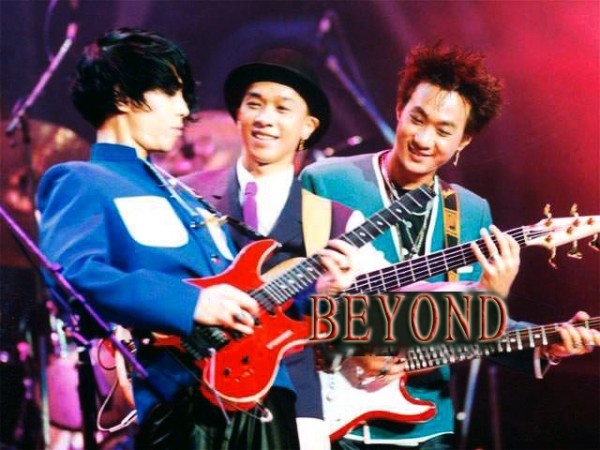

HOME
我最爱的乐队
我最爱的乐队是Beyond，它是来自于中国香港的一支摇滚乐队。1983年成立，最初成员是黄家驹，叶世荣，邓炜谦，李荣潮。1985年以“地下乐队”身份第一次在香港举行了“永远等待”音乐会。1988年Beyond举行大专会堂苹果牌演唱会后刘志远退出乐队，至此以黄家驹、叶世荣、黄家强、黄贯中四人的阵容最广为人知。乐队的作品多以写实为主，内容反映社会时弊以及他们的所见所感。乐队注重原创，乐队成员坚持创作所有歌曲的旋律部分。

beyond最棒！